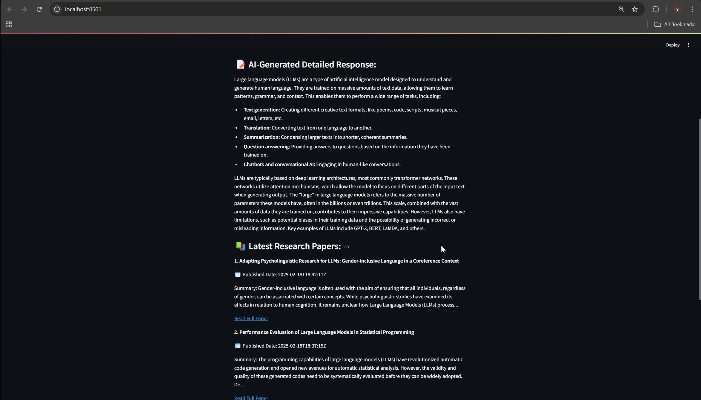

Demonstration
Introduction
Finding relevant academic literature across domains and languages is a key bottleneck in research workflows. Keyword-based search engines often miss contextual nuance, while existing tools rarely support multilingual access. This project introduces a multilingual, GenAI-powered assistant that performs semantic retrieval and paper synthesis to address these challenges.
Methods
I implemented a Retrieval-Augmented Generation (RAG) pipeline combining semantic vector search (ChromaDB) and LLM-based response generation. A custom backend API pulls metadata and abstracts from arXiv and PubMed. Queries are embedded using multilingual LLMs, supporting English, Spanish, French, German, Chinese, and Japanese. The system returns relevant paper summaries based on semantic context.
Results:Top-3 relevance accuracy: 88%+ Multilingual support: 6 languages It was awarded as the best project in the class
Discussion
By using generative AI to summarize and recommend papers, this tool makes research more accessible and efficient. It addresses gaps in existing academic discovery systems, particularly for non-English-speaking researchers. I developed the entire stack-including backend logic, LLM integration, indexing, frontend, and performance benchmarking-demonstrating my ability to deliver scalable and inclusive AI solutions.